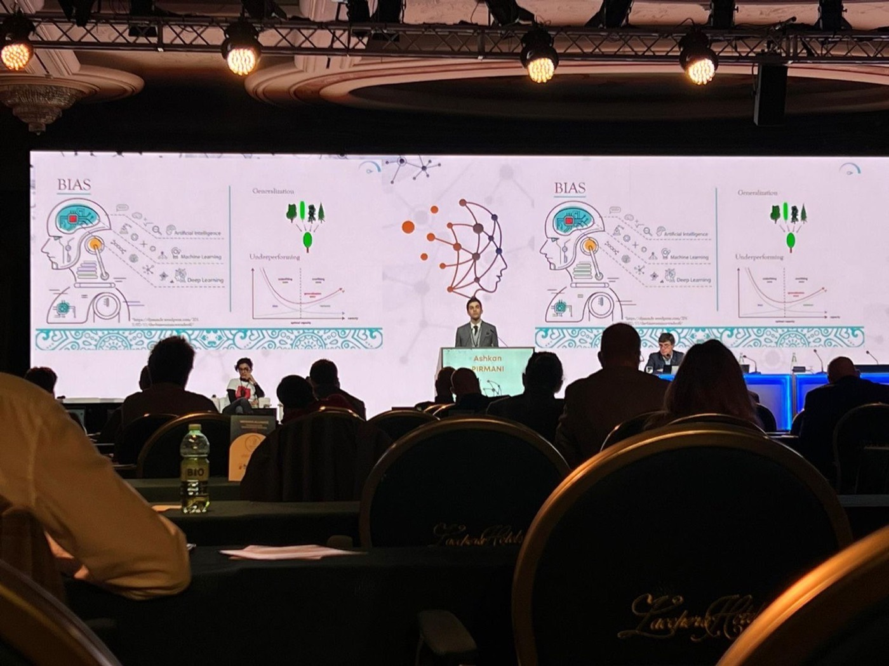
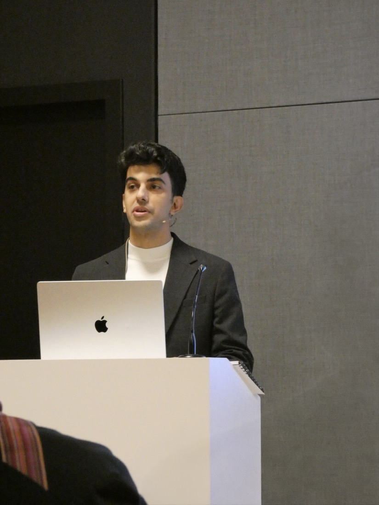

01Talks
Where this work has been presented


Newest first. Invited means somebody asked me to come and say it. Conference means I submitted it and it was accepted. Industry and community invitations included Roche and Flower.
InvitedMedical Informatics Europe 2026, Genova
On accessible federated learning frameworks. The main European conference for health informatics.
SeminarKU Leuven, Department of Electrical Engineering
On personalized federated learning in clinical settings.
IndustryRoche, federated learning team for multiple sclerosis
On federated prediction of disability progression using records from ordinary care.
SeminarNorth American Society of Artificial Intelligence in Multiple Sclerosis
On routine clinical records and federated modeling.
ConferenceECTRIMS 2025, Barcelona
Abstract accepted, and awarded a personal grant for scientific quality for FLoRank. ECTRIMS runs the largest multiple sclerosis research congress in the world.
CommunityFlower Monthly
Invited to the Flower federated learning community, one of the most widely used open federated learning frameworks.
ConferenceECTRIMS 2024, Copenhagen
Abstract and poster.
ConferenceMedical Informatics Europe 2024, Athens
Paper presentation. Unlocking the power of real world data, a framework for sustainable healthcare.
InvitedMultiple Sclerosis Data Alliance, Baveno
On scaling up real world data research across the alliance, a global collaboration bringing registries and consortia together.
02Ahead
What is coming
Two things that have not happened yet. They are here because they are decided and funded, not because they are done.
UpcomingInnovation Mandate, Flanders Innovation and Entrepreneurship
A Flemish government grant to a company, a university and one researcher together. The first year builds the method at the university, the second applies it with the company. Run with Johnson & Johnson Innovative Medicine, on comparing treatments fairly using records from ordinary care, where there was never a trial to compare them in.
UpcomingFLoRank leaves the bench
First run on a real data network, using the largest multiple sclerosis data set in Latin America. Access is agreed and the early work has started. Until it runs, FLoRank is a prototype and the site says so.
03Milestones
What has happened
Paper published in npj Digital Medicine
Personalized federated learning for predicting disability progression in multiple sclerosis using real world routine clinical data.
Defended the dual PhD
From Centralized to Federated: The Journey of Data in Healthcare. KU Leuven and Hasselt University.